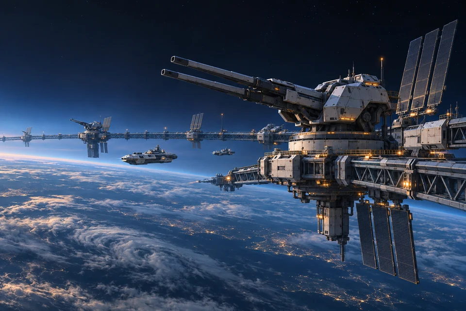
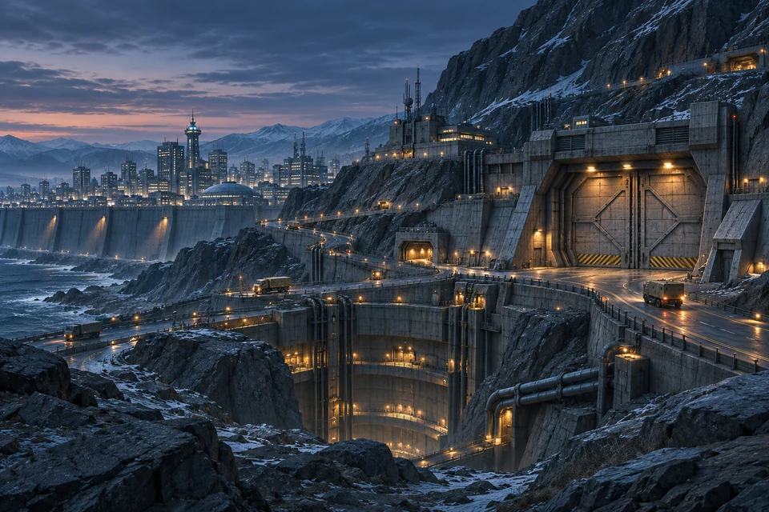
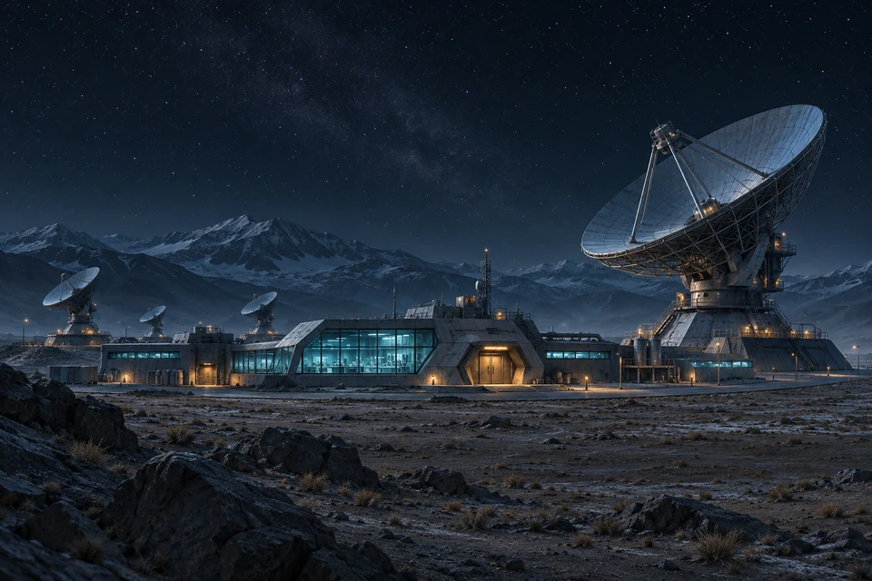

COMMAND
A grounded orbital-command graphics pack for a century of preparation. Midnight slate, satellite Earth, amber instruments and human engineering.
Recognisable geography, clouds and city lights make the world feel worth defending. The existing live project overlays remain on top.
Orbital platforms for Defence, protected infrastructure for Endurance, and remote listening arrays for Science. These are illustrations of capability, not construction progress.
Hostile ships remain abstract contacts. No portraits, species-specific hulls or artwork that gives away the hidden enemy.
Symbols support text labels. Colour keeps its meaning. Reduced-motion settings remove pulses; the canvas draws at a capped frame rate.
Three human directorates
AI-generated artwork with optimised WebP game exports and full-resolution PNG masters in the source pack.

960 × 640 / WEBP

960 × 640 / WEBP

960 × 640 / WEBP
Project symbols
Fifteen scalable symbols, plus navigation and battle-lane icons. Every symbol retains its written label in the game.
Ships, shields & impacts
Canvas-native assets remain sharp at phone scale. Human frigates use pale hulls and blue drives; unknown hostile contacts use angular red silhouettes.
Try both versions
These are the actual game files. Each frame has its own scrolling area and all the original controls. Only presentation has changed.